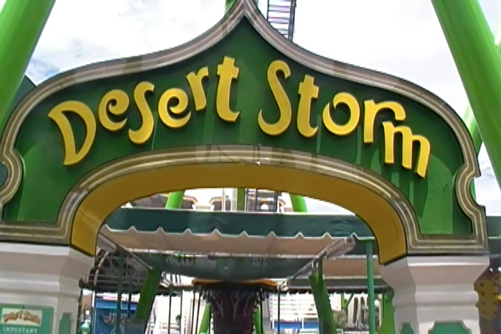

| |
Castles 'N' Coasters Review
Castles'N'Coasters is a fun little park that seems like a Golf'N'Stuff style place at first, and you are absolutely right. This is TOTALLY a Golf'N'Stuff kind of place. In fact, it reminds me EXACTLY of Golf'N'Stuff, if it only had a couple of rides. So yeah. There's honestly not too much to this place. But hey. I do like Golf'N'Stuff and I really did enjoy the park. Well, as much as I could enjoy a Golf'N'Stuff kind of park. And even among those kinds of parks, this place isn't as good as a park like Castle Park. But even so, it's still a fun little park. It does have a couple of...strange...roller coasters as well as a couple of other rides. I'm sure locals can tell me all that this park has to offer, but honestly, I didn't really spend much time at this park since I was literally just in and out to get the credits. So I just blazed right through this park. But hey, I had a long drive all the way to San Antonio ahead of me. I'm not sure if I'll ever make it back to a park like Castles'N'Coasters, but hey. If you need credits in Arizona, you have a couple of easy options.
Rollercoasters
There is a link to a review of all the Rollercoasters at Castles 'N' Coasters.
Top Coasters
Desert Storm Review

Kiddy Coasters
Patriot Review

Flat Rides
All right. Here are all of the flat rides that are found at Castles 'N' Coasters. OK, I didn't do any of the flat rides here, so I'm only speaking about what there is and what I saw. From what I saw, there's really only one flat ride that's worth riding at Castles 'N' Coasters. And that would be their Shock Drop, Sky Diver. Now these are really fun rides. I've enjoyed every single one I've ridden so far. So I'm sure this one would've been fun too. I kind of regret not riding it when I was here. But having a 13 hour drive half way across the country ahead of you kind of makes you rushed. They also have a pirate ship, some go karts, and a music express. Hmm, for a Golf'N'Stuff style place, not bad.
Water Rides
There is only one water ride at Castles'N'Coasters. Its just a log flume. Now this is sort of the log flume that seems exactly like the crappy carnival log flumes that keep popping up at your local county fair. And to be fair, this doesn't seem quite as bad and lazy as that. There is SOME theming on the ride. But at the same time, the theming for this log flume is the same sort of theming that you'll find on your typical minature golf course. Because yeah. This ride is at a Golf'N'Stuff style park. But hey, it does look like fun. And even if it's not, this is Phoinex AZ. IT GETS F*CKING HOT HERE!!!! So even if it's a sh*tty log flume, I imagine that people like this ride.
Dining
I never ate at Castles'N'Coasters. I can't imagine that the food is anything special. I assume that it's the same as what you'd find at your typical Bowling Alley or your local Golf'N'Stuff. Nothing to talk about here folks.
Theming and Other Attractions
Here are the reviews of all the other stuff at Castles'N'Coasters. Well when it comes to theming, Castles'N'Coasters doesn't really have much. Yeah, it has a little bit of theming. But really, this is the exact same kind of theming that you'd find at your typical Golf'N'Stuff style place. There's nothing surprising about the theming here, and as such, there's really not much to say about it. And when it comes for other stuff to do, yeah. Theres a lot more at Castles'N'Coasters, but it's all stuff that you'd expect a place like this to have. They do have a really nice arcade. And they also do have mini-golf course. OF COURSE!!!! I never checked it out. But I'm sure that its fun.
In Conclusion
Castles'N'Coasters is not an incredible theme park by any means. It's not even much of a theme park. It's pretty much just a fun little park where you can go ride some rides and play some minature golf. It's a park that is primarily meant for locals, but I'm sure you can have fun for a couple hours here. Yes, I treated the park as a credit whoring stop and didn't really do anything aside from the two roller coasters. But hey. I did have fun on them, and I would've done more if I had time and wasn't rushing off to drive 981 miles to San Antonio, Texas. So while Castles 'N' Coasters isn't a place that I'd really recommend since it's not really much of a theme park, if you are in Phoinex, and you decide to stop on by and credit whore, don't be afraid to stop on by. It's a fun little place to spend an hour or two.
Enthusiast FAQs.
*Are there kiddy coaster restrictions? - No. There are no restrictions for Patriot.

Tips
*Desert Storm and Patriot are agressive little rides. Just a heads up.
*Get an unlimited ride wristband.
*Have Fun!!!!
Theme Park Category:
Credit Whoring Park
Location
Phoenix, Arizona, U.S.A
Last Day Visited
July 13, 2013
Video
It's highly unlikely that there'll ever be a Castles'N'Coasters video. But you never know.
Complete Update List
2013
Texas/Rocky Mtn Road Trip
Here's a link to the parks website.
Home
|